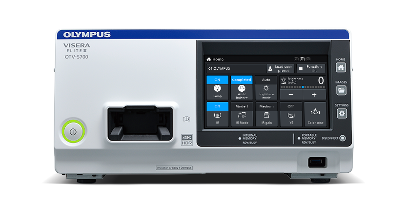
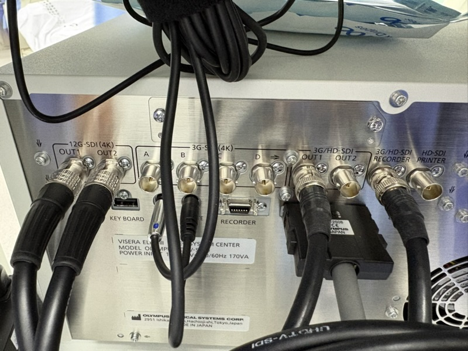
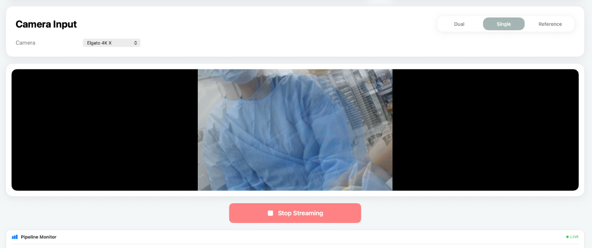
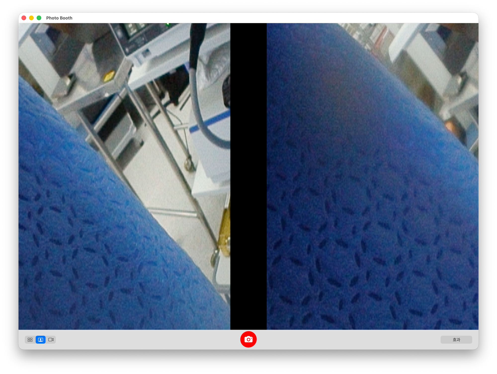
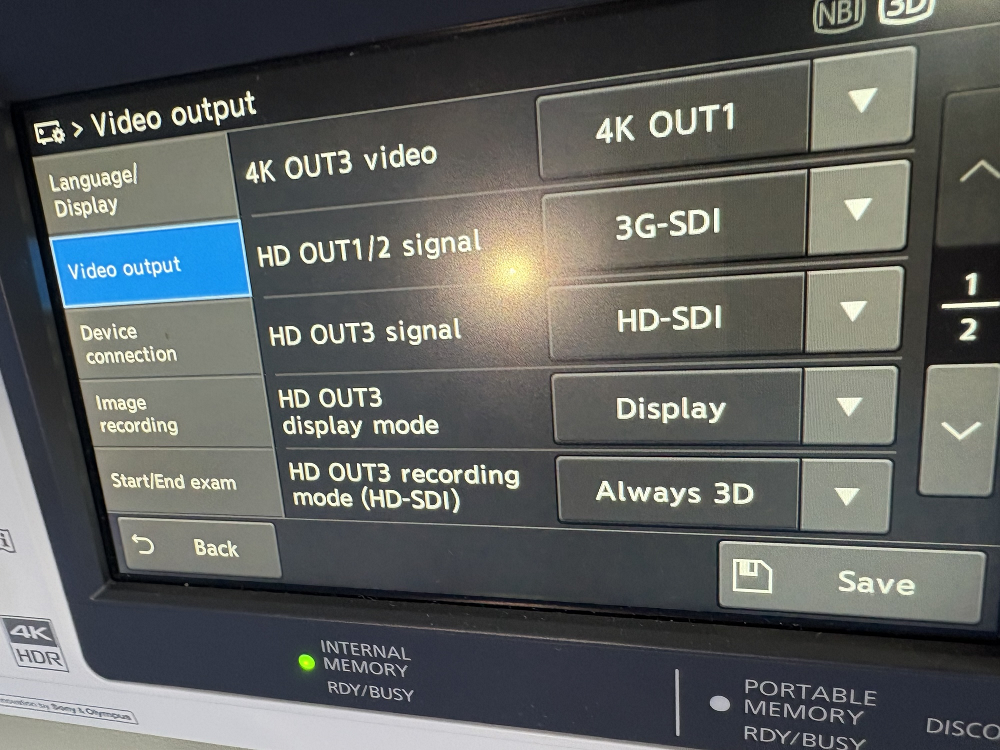
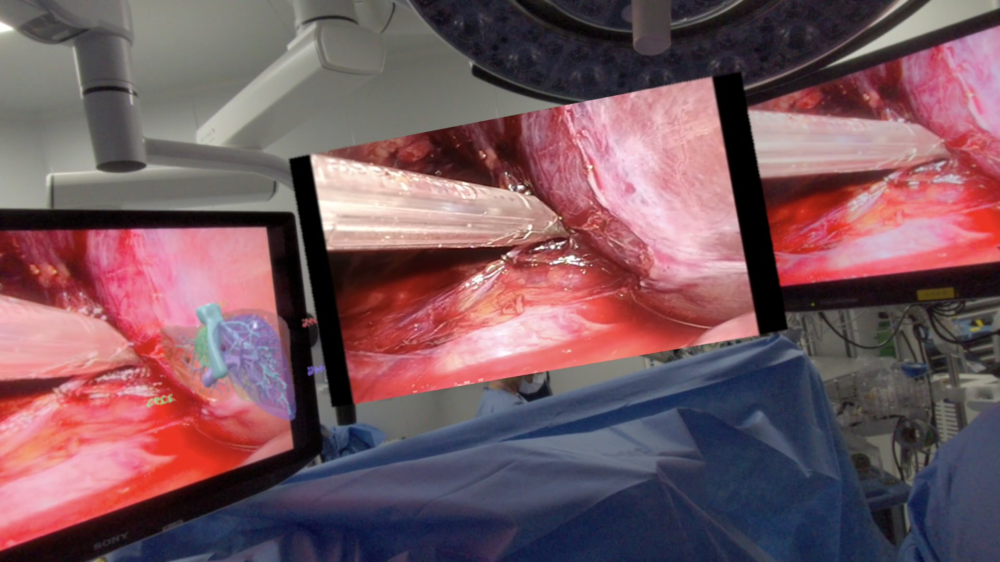

OTV-S700의 SDI 출력 포트
OTV-S700은 녹화용 HD 출력과 4K 출력을 별도로 제공합니다. XR 연결에서는 12G-SDI를 먼저 시험한 뒤, SBS 영상을 받을 수 있었던 HD OUT3를 사용했습니다.


- 녹화용 HD 출력
- HD OUT3 · RECORDER
메뉴에서 HD-SDI 또는 3G-SDI를 선택합니다. 이번 연결에는 HD-SDI·Always 3D를 사용했습니다.
- 4K · Quad-Link
- 3G-SDI (4K) A–D
네 포트가 한 세트입니다. 하나의 4K 신호를 네 개의 SDI 링크에 나눠 보냅니다.
- 4K · Single-Link
- 12G-SDI OUT1·OUT2
4K 신호를 케이블 한 선으로 전송할 수 있는 출력입니다.


Quad-Link 수신 장치에서는 A–D 네 링크를 함께 받아 하나의 4K 영상으로 구성합니다.
12G-SDI와 HD OUT3의 수신 화면
- 2026.07.15
SDI 출력 구성 확인
현장에서 S700의 SDI 출력 구성을 확인하고 변환 경로를 준비했습니다.
- 2026.08.04
12G-SDI · 좌우 영상 겹침
3D 옵션을 켜고 12G-SDI 출력을 변환기와 캡처카드를 거쳐 Mac으로 받았습니다. 캡처 화면에서는 좌우 영상이 겹쳐 보였습니다.

사진 212G-SDI · Mac 앱에서 확인한 좌우 영상 겹침 - 2026.08.06
HD OUT3 · SBS 수신
녹화용 HD OUT3로 연결을 바꾼 뒤에는 좌우 영상이 한 프레임에 나란히 담긴 SBS(Side-by-Side)로 들어왔습니다. 이 입력을 Mac 앱에서 받아 Galaxy XR로 전송했습니다.

HD OUT3 · Photo Booth에서 확인한 좌우 나란한 영상


HD OUT3의 녹화·XR 신호 분배
녹화장치에 연결된 HD OUT3 신호를 SDI 분배기로 나눴습니다. 한쪽은 기존 녹화를 유지하고, 다른 쪽은 SDI→HDMI 변환기와 캡처카드를 거쳐 Mac에 연결했습니다.
HD OUT3 · SDI 신호 분배
HD OUT3SDI 분배


- HD OUT3
- HD-SDI · Always 3D
녹화 출력에 3D 영상을 유지하는 설정입니다.
- Mac에서 받은 영상
- 1920×1080 · Half SBS
Full HD 프레임에 좌우가 나란히 담기며, 각 눈의 영역은 960×1080입니다.
- 무선 전송
- H.264 · Galaxy XR
Mac에서 좌우 합계 1920×1080을 유지해 전송했습니다.
HD OUT3 경로의 해상도를 유지해 전송한 뒤, 수술 종료 후 다른 출력 포트도 살펴봤습니다.
| 출력 | 관찰 |
|---|---|
| HD OUT3 | 좌우가 나란한 3D 영상 수신 |
| 12G-SDI OUT2 | 움직이는 영상은 들어왔지만, 좌우가 나란한 입력으로 확인되지 않음 |
| 3G-SDI(4K) B·C·D | 각각 한 선씩 연결했을 때 사용 가능한 영상이 나오지 않음 |
Half SBS 전송 설정과 측정
Mac 앱에서 좌우 합계 1920×1080을 유지하는 H.264 전송 설정을 사용했습니다. 아래는 이 조건에서 Galaxy XR로 연속 수신한 구간의 기록입니다.
| 항목 | Galaxy XR 기록 |
|---|---|
| 분석 길이 | 21분 13.769초 |
| 유효 수신 영상 | 1920×1080 · 좌우 합계 |
| 평균 디코드 프레임률 | 약 59.82fps |
| 평균 수신 비트레이트 | 20.102Mbps |
| 로그의 정지 감지 | 4회 · 합계 약 0.97초 |
| 드롭 프레임 | 36개 |


당시 입력은 눈당 가로 해상도가 절반인 Half SBS였습니다. 입력 단계에서 담기는 정보가 제한돼 있어, 송신 해상도를 높여도 체감 선명도 차이는 크지 않았습니다.
Full SBS 수신을 목표로, 12G-SDI 출력의 3D 형식과 캡처 구성을 검토하고 있습니다.